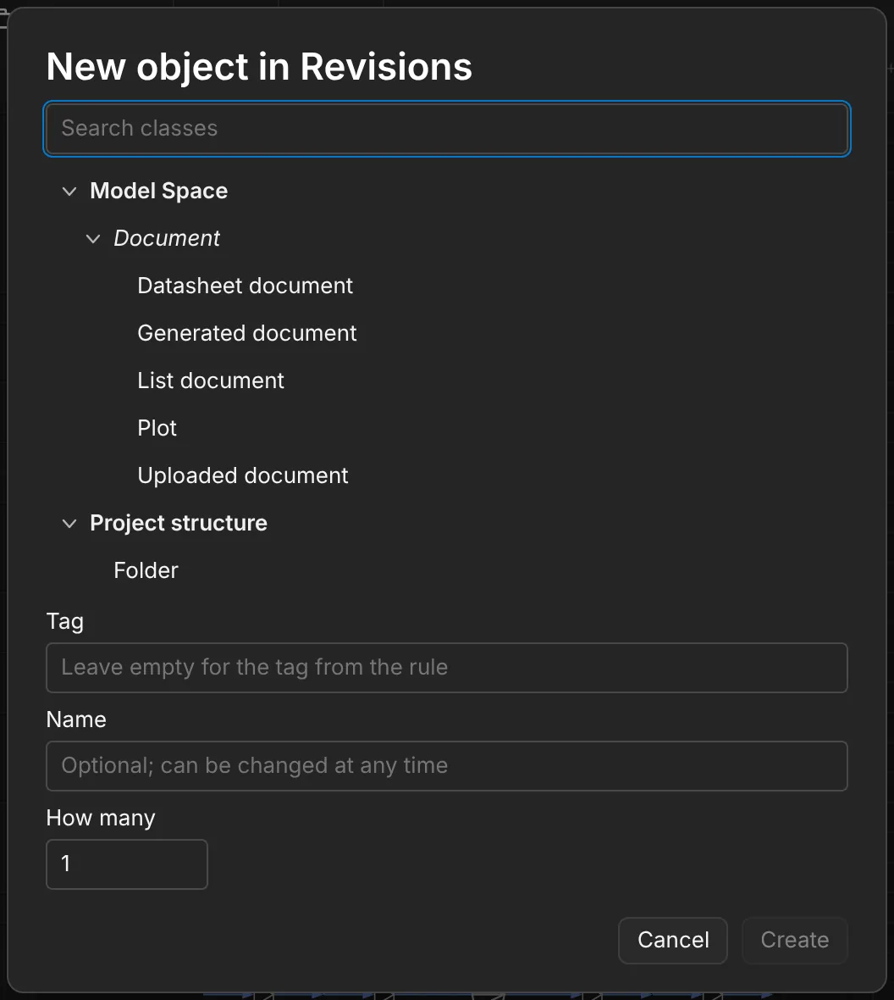
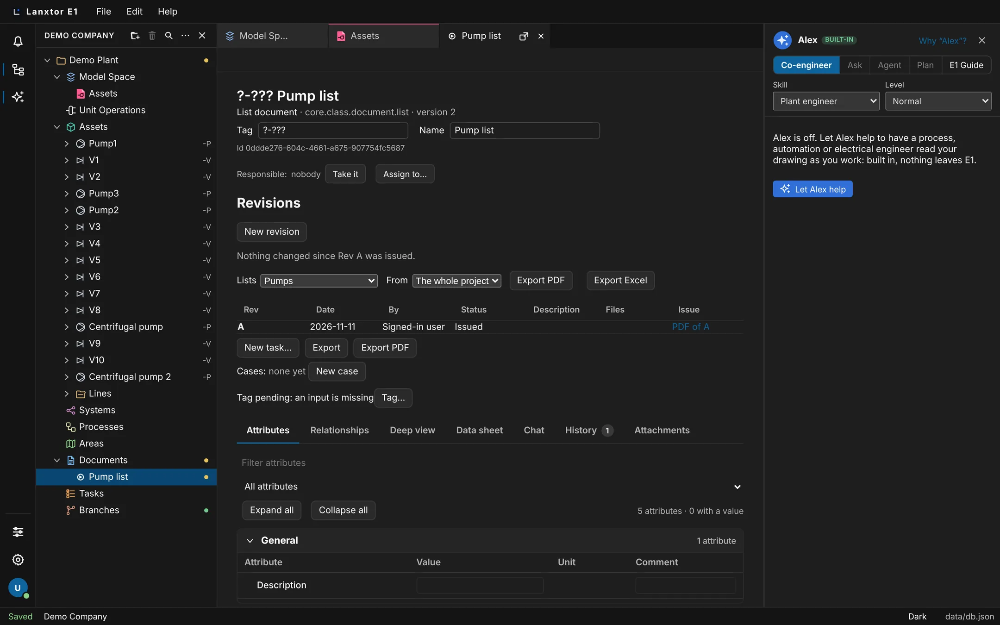
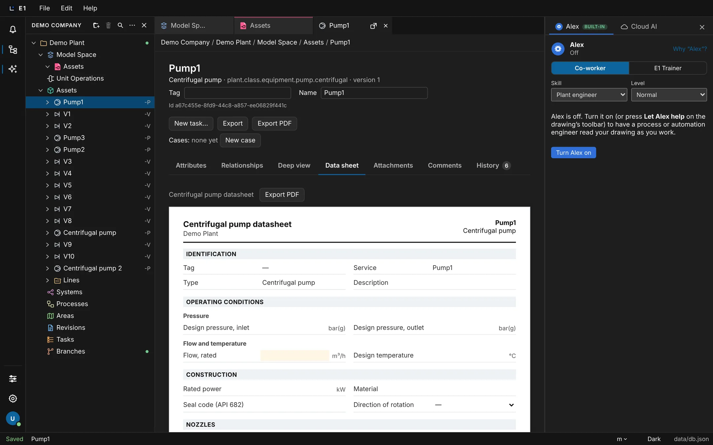
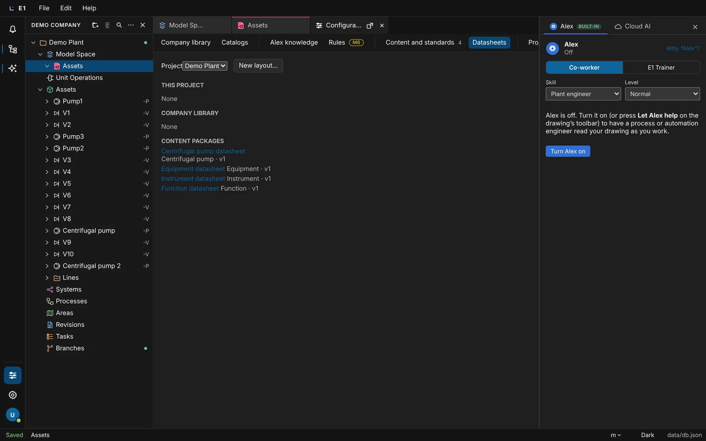

Academy / User guide / Documents, revisions and datasheets
7. Documents, revisions and datasheets
Documents and their revisions, issuing, changed since, PDF and Excel output, sheet PDF and printing, datasheets and the datasheet designer.
About this guide
Documents are the deliverables of a project: lists, drawings plotted to PDF, datasheets and uploaded files. Each document has revisions A, B, …; issuing a revision freezes it and its PDF, and E1 then shows what changed since. Datasheets are also the everyday screen of an object, with a designer to lay them out.
Typical workflow
- Open the Documents section and make a new document: a list document, a plot, an uploaded PDF, a datasheet document or a hyperlink to a file kept elsewhere.
- Add revisions and set their status; colleagues see the Updated mark.
- Issue a revision, then follow what changed since.
- Make a PDF of a P&ID 2D space or print it.
- Open an object's datasheet, edit it, print it to PDF, and change its layout in the datasheet designer.
- Before you start
- A project with objects and a drawn 2D space, for example Demo Plant. A list document needs a saved query (see Save a query as a template).
- Who
- Reading needs any project role. Adding revisions needs a role that may write documents; issuing needs a Lead; PDF and Excel output need a role that may export.
The Documents section
The project section that holds every document and its revisions.
- Where
- Explorer → Documents
- Before you start
- A project is open in the explorer.
Steps
| # | Action | Expected result |
|---|---|---|
| 1 | Click Documents under the project in the explorer. | The Documents section is selected in the explorer and its page opens. The toolbar shows New document…, New folder and New PDF package; under it the tabs Deliverables and Issued sets. The documents themselves are in the explorer under the section. |
| 2 | Right-click Documents in the explorer. | The menu offers New document…, New folder and Query ▸. |
Watch the lesson: Where documents live · Making a document (Documents and revisions · 6 min) · Show me how in E1: Find the documents: the Deliverables section
New document…: list, plot, uploaded or datasheet document
Make a document in the Documents section by choosing its kind.
- Where
- Right-click Documents → New document…, or the section toolbar's New document…
- Who
- A project role that may write documents
- Before you start
- The project has a Documents section.
Steps
| # | Action | Expected result |
|---|---|---|
| 1 | Right-click Documents → New document…. | The dialog “New object in Documents” opens. Under Document it lists Generated document, with Datasheet document, List document, Plot, Revision and Version under it, Hyperlink and Uploaded document; Create is off. |
| 2 | Type list in Search classes and choose List document. | List document is selected and Create turns on. |
| 3 | Leave Tag empty (“Leave empty for the tag from the rule”) and type Pump list in Name. | The fields hold your values. |
| 4 | Click Create (or press Enter in Tag or Name). | The dialog closes and the document's window opens; its Versions and revisions panel says “No version or revision yet.”. |

A double-click on a kind, in the list of kinds or under Recent, creates the document at once; a single click only chooses it. Esc does not close the dialog; click Cancel or outside it.
The document number is its tag, made by the project's tag rules. A Generated document is a loop diagram, made from the drawing (see Loop diagrams).
Revision and Version are new kinds of generated document. You can make one, but E1 does not generate their content yet.
Watch the lesson: Where documents live · Making a document (Documents and revisions · 6 min) · Show me how in E1: Make a new document
List documents from a saved query, with PDF and Excel
A list document shows a saved query from a starting point and prints it to PDF and Excel with a title block.
- Where
- A List document's window → Versions and revisions → “What this list shows”
- Who
- A project role that may write documents; Export PDF and Export Excel need a role that may export. A restricted project asks you to sign in again.
- Before you start
- A project query “Equipment list” is saved for the project, and a List document exists (see New document…).
Steps
| # | Action | Expected result |
|---|---|---|
| 1 | Open the list document. | The Versions and revisions panel shows “What this list shows”, a box with the rows Lists (“Choose a saved query…”), From (The whole project or a section) and Print, with Export PDF and Export Excel at its end. From, Export PDF and Export Excel stay off until a saved query is chosen. |
| 2 | Set Lists to “Equipment list” and From to Assets. | The choices are kept. |
| 3 | Create Rev A and sign it off (Versions and revisions of a document). | Rev A is issued. |
| 4 | Click Export PDF. | “Writing the PDF…”, then a file ending “Rev-A.pdf” downloads and the panel says “The PDF is downloaded.”. |
| 5 | Click Export Excel. | “Writing the workbook…”, then a file ending “Rev-A.xlsx” downloads. |
| 6 | Open both files. | Both carry the project, the document, its number, the current revision and the date. The workbook has title rows, then the table with an E1 id column; the PDF has no E1 id column. |
With no saved queries the panel says “Save a query first (a query tab's Save): a list shows a saved query.”. The workbook can be read back with Update from Excel… in the query: its title rows are skipped. File names are “<number or document>-Rev-<label>.pdf” or “.xlsx”.
Export PDF and Export Excel print the current state with the current revision's label; they are downloads, not revisions. The frozen PDF of an issued revision is its Open PDF of <label> link.
The window does not preview the list; open the query from the explorer to see its rows.
Watch the lesson: List documents and their PDF (Documents and revisions · 6 min) · Show me how in E1: Make a list document from a saved query
Reports: several saved queries in one document
Add to report… on a saved query makes a report, or adds the query as a section of one; its PDF prints every section under its heading, grouped by a column, and a revision issues it.
- Where
- A saved query's toolbar → Add to report… (greyed out until the query is saved: point at it to read "Save the query first"); the report's window → Versions and revisions → Report
- Who
- Create documents (Engineer and above); its PDF and Excel need a role that may export
Steps
| # | Action | Expected result |
|---|---|---|
| 1 | Open a saved query, such as “Pumps”, and click Add to report…. | “Add to report” with Report (New report or one of the project's reports), Name, Section title and Start on a new page. |
| 2 | Keep New report, name it “Unit report” and click Create report. | A list document “Unit report” is made in Documents and its window opens; its Report shows one section, Pumps. |
| 3 | Open another saved query, “Motors”, click Add to report…, choose “Unit report” and click Add to report. | The report's Sections lists Pumps and Motors, each with where it starts and whether it starts a new page. |
| 4 | In the report's window choose a column in the Group by list, such as “Area” (the list holds the columns of the report's sections; No grouping groups nothing), and tick New page for each group. | The settings are kept. |
| 5 | Click Export PDF. | One PDF: each section under its heading, its rows under a heading per area, each area on a new page, the header repeated on every page and Page n of m in the footer. |
| 6 | Click Export Excel. | A workbook with a sheet per section. |
| 7 | Click Add section…, choose a saved query and click Add section; then use ↑, ↓ and ×. | The section is added, moved and removed. |
The report's first section is also the list's own saved query (Lists and From above it). A revision of the report freezes every section's rows.
Columns are each section's own; there is no column width or split setting yet, and rows the person creating a revision may not see are not refused.
Watch the lesson: Reports · PDF packages (Documents and revisions · 7 min) · Show me how in E1: Make a report from saved queries
PDF packages
New PDF package in Documents binds documents into one PDF: a cover, an index, then each document's current revision, latest version or current state; a revision of the package takes current revisions only.
- Where
- Right-click Documents → New PDF package, or New PDF package in the bar of the Documents page; the package's window → Versions and revisions → PDF package
- Who
- Create documents (Engineer and above); Generate package needs a role that may export
Steps
| # | Action | Expected result |
|---|---|---|
| 1 | Right-click Documents and choose New PDF package. | “PDF package” is made in Documents and opens, with the rows Cover title and Index (Index after the cover), “No documents yet”, and Generate package at the end of the row Package. |
| 2 | In the tree Documents to add (the project's documents, as in the explorer; Filter the list narrows it), click two documents. | Both are listed with their number and title; each Takes Current revision. In the tree a document already in the package is greyed "Already in the package", and the package itself "This package". |
| 3 | Set the second one's Takes to Current state (not issued). | The choice is kept. |
| 4 | Click Generate package. | “Binding the package…”, then one PDF downloads: the cover with the project and the title, the index (Document no., Title, Revision, Purpose, Pages), then each document's pages in order; the one in its current state says Not issued in the index and NOT ISSUED across its pages. |
| 5 | Click Create revision… with IFA. | Refused: a revision of a package holds only issued revisions. |
| 6 | Set both to Current revision and create the revision again. | It goes through sign-off like any revision; the issued PDF keeps which revision of each document it bound. |
Latest version takes a document's newest version, for people who see versions. A document without an issued revision cannot be taken as its current revision.
A package holds up to 1,000 documents. Generate package binds 1,000 single-sheet drawings into one PDF in a few seconds.
Watch the lesson: Reports · PDF packages (Documents and revisions · 7 min) · Show me how in E1: Bind documents into a PDF package
Deliverables: preview and issue the project's document set
The Documents section's page has Deliverables: the set the project hands over. It binds the chosen drawings with the profile's reports and datasheets into one PDF, with a cover, an index and page numbers, shows it right on the page, and issues it.
- Where
- Click Documents in the explorer → Deliverables
- Who
- Configure documents to change the set; create revisions to issue it
- Before you start
- The project has at least one 2D space. The profile's page sizes, reports and datasheets are set in Configuration → Deliverable profiles.
How it works
What many projects share is made once in Configuration (the deliverable profile: page size per kind of document, page numbers, where reports and datasheets go). Project settings → Documents chooses the profile and the project's numbering. This page makes the set: which drawings, reports and datasheets, then preview and issue.
Steps
| # | Action | Expected result |
|---|---|---|
| 1 | Click Documents in the explorer. | The page shows two tabs, Deliverables and Issued sets; Deliverables is open, with the Deliverable profile, links Project settings and Edit in Configuration, the drawings tree, Reports and datasheets and the buttons. |
| 2 | Untick one 2D space in the drawings tree. | The box clears at once and the heading reads Drawings: n of m with one fewer; the choice is saved. |
| 3 | Tick a report under Reports and datasheets. | It is in the set, at the place the profile gives it. |
| 4 | Under Loop diagrams set In the set to Every loop (n) and On the sheets to Fill sheets top to bottom. | Every function with a device under it comes after the drawings, several loops to a sheet, one under another; a loop too tall for a sheet has one of its own. Fill sheets left to right puts them side by side instead; One loop per sheet gives each its own; Overview: simple loops of one I/O card together draws the simple loops of each I/O card (one digital signal, no barrier, not a motor's, such as a card's solenoid valves) side by side as one drawing, eight to a sheet, the other loops one to a sheet. The loop preview and its Export PDF use the same choice. |
| 5 | Click Preview PDF. | “Writing the PDF…” and a bar with how many parts are written (for example 120 of 481 parts written), then the whole set opens in the viewer on the page, marked DRAFT: cover, index, drawings, reports and datasheets, with page numbers. You and everyone else keep working meanwhile; Stop ends it and says “Stopped. Nothing was written.” |
| 6 | Click Issue…, choose a Purpose of issue and click Issue the set. | The set is issued with the next revision of the project's numbering; the Issued sets tab opens with it listed, and it is filed as a document in Documents. |
| 7 | On the Issued sets tab, click View on an issued set. | Its PDF opens in the viewer; Open in a new tab opens it full size. |
A set holds up to 10,000 parts (each drawing, report and datasheet is one; all the loop diagrams together are one), and a profile up to 500 reports. A whole project takes minutes: the set is made on the server beside everyone's work, and does not slow anyone down.
Watch the lesson: Issuing the deliverables · Document settings (Documents and revisions · 7 min) · Show me how in E1: Make and issue the deliverable set
Uploaded documents: revise a PDF from outside
Keep a PDF made elsewhere as a document: attach it, then create a revision, which holds the newest attached PDF.
- Where
- An Uploaded document's window → Attachments tab and Versions and revisions
- Who
- A project role that may create revisions
- Before you start
- A PDF file on your computer.
Steps
| # | Action | Expected result |
|---|---|---|
| 1 | Right-click Documents → New document…, choose Uploaded document, and click Create. | The document's window opens. |
| 2 | Open its Attachments tab, click Add files… and choose the PDF. | The PDF is listed with Open and Remove. |
| 3 | Click Create revision…, choose a purpose, and Create and send for sign-off. | The revision holds the PDF as it is now and goes through sign-off; its issued PDF is that file. |
Attachments are kept on the E1 server; the desktop app without a server keeps no uploaded PDFs.
Watch the lesson: Plots and page formats · Uploading a document (Documents and revisions · 8 min) · Show me how in E1: Revise a PDF made elsewhere
Hyperlinks: link a file kept in another system
Your files can stay where they are. A hyperlink is a document in E1 that stands for one file kept elsewhere, such as one of thousands of PDFs in your document management system: it holds the file's web address and opens it there. Relate it to a pump, a motor, a system, a process, an area, a 2D space or another document, and the file is found from that object.
- Where
- Right-click Documents → New document… → Hyperlink
- Who
- A project role that may write documents
- Before you start
- The web address (http or https) of the file in the system that keeps it.
Steps
| # | Action | Expected result |
|---|---|---|
| 1 | Right-click Documents → New document…, type hyper in Search classes, choose Hyperlink, type Pump P-101 manual in Name and click Create. | The hyperlink's window opens. Its Link row says “No link yet: type the file's web address in Link below.”, and Open link is off. |
| 2 | In its data, type the file's address in Link (for example https://dms.example.com/doc/4711.pdf) and the system's name in Kept in. | The Link row shows the address, with “kept in” and the system, and Open link turns on. |
| 3 | Click Open link. | The file opens in a new browser tab, in the system that keeps it. |
| 4 | In the explorer, drag the hyperlink with the right mouse button onto a pump. | Make a relationship? says “Pump P-101 manual documents P-101.” Click Make relationship: both stay where they are, and the pump's relationships list the hyperlink (is documented by). |
| 5 | Right-click the hyperlink in the explorer → Open link. | The file opens in a new tab without opening the hyperlink's window. |
| 6 | Right-click the hyperlink → Place on drawing… and choose a 2D space. | Its shape, a page with a chain link and its tag below, is drawn on the 2D space. Lines do not connect to it. |
| 7 | Select it on the drawing, Copy, then Paste on the empty sheet. | A second page is drawn. The copy is a new hyperlink under Documents (in its Copy temp folder) with the same Link and Kept in; it never goes under Assets. |
| 8 | On the Documents page, click Query in words… and type pumps with a hyperlink, or hyperlinks where kept in is Doxis. | The query lists the pumps that have a hyperlink, or the hyperlinks kept in that system. In New query…, Link, Kept in and the objects a hyperlink documents can be columns. |
In the explorer a hyperlink has a chain-link icon. Only http and https addresses open. An address typed without them, such as dms.example.com/doc/4711, opens as https. The Hyperlinks choice of the All ▾ filter on the Documents page lists only the hyperlinks.
E1 keeps no copy of the file and does not check that the address still works: its revisions are kept in the system that keeps the file, so a hyperlink has no Versions and revisions panel. Whether the file opens depends on your access to that system.
Watch the lesson: Linking files from another system · Reading a document's PDF (Documents and revisions · 6 min) · Show me how in E1: Link a file kept elsewhere: Hyperlink
Versions and revisions of a document
A document’s window shows its versions and revisions with the Document control box; Create revision… with a purpose of issue gives the next label.
- Where
- A document's window → Versions and revisions; a 2D space's page has the same panel (Revisions of a 2D space)
- Who
- A project role that may create revisions (Engineer and above); a Reviewer reads but creates none
- Before you start
- A document is open with “No version or revision yet.”; a list document shows a saved query.
The panel
- A row of actions: Create version… and Create revision…, then Audit report (CSV) and Audit report (PDF) (see Audit report), and Reinstate… for a void document. A 2D space's page has the same row; its toolbar at the top also has Create version… and Create revision….
- The Document control box, a row each: Document no., Title, Current revision and Latest version (Issued before the first one).
- For a list, a plot, a datasheet or a PDF package, a box with what it prints, a row each, and its exports at the end of the row Print (or Package).
- The outputs, newest first.
Steps
| # | Action | Expected result |
|---|---|---|
| 1 | Click Create revision…. | The form opens with Purpose, Description, Cancel and Create and send for sign-off. |
| 2 | Choose IFR — Issued for review. | “This will be Rev A — Issued for review”; the description is offered as “Issued for review”. |
| 3 | Click Create and send for sign-off. | The document is frozen as it is now; the sign-off panel shows Prepared signed by you, Checked open, Approved waiting. If it cannot be made (the server not reached, a refusal), the form stays open with what you chose and says why beside its button. |
| 4 | Click Create revision… again. | “Rev A is still in sign-off. Withdraw it or finish it first.”: one revision is open at a time. |
| 5 | Once A is issued, choose IFC — Issued for construction. | “This will be Rev 0 — Issued for construction”. After Rev 0, the purposes before construction are greyed. |
The labels follow the project's revision scheme (Project settings → Documents): A, B, C … skipping I, O, Q, S, X and Z, then 0, 1, 2 … from construction, by default. A withdrawn or rejected revision gives its label back; a deleted one never does.
Watch the lesson: Revisions of a document · Revision status · Seeing new revisions (Documents and revisions · 8 min) · Show me how in E1: Create a revision and sign it off
Statuses of a version or revision
In sign-off, Rendering…, Could not make the PDF, Issued, Superseded, Rejected, Withdrawn and Deleted: where a version or revision is in its life.
- Where
- The outputs list → Status column
- Who
- Anyone who may view the document
The statuses
| Status | Meaning |
|---|---|
| In sign-off | Created and frozen; waiting for the next step to sign. |
| Rendering… | The last step signed; E1 is making its PDF. |
| Could not make the PDF | The PDF failed; the signatures stay valid. Retry makes it again. |
| Issued | Its PDF is made and filed; for a revision, the current one. |
| Superseded | A later revision is issued. Versions are never superseded. |
| Rejected | A signer rejected it with a reason; withdraw it and create a new one. |
| Withdrawn | Taken back by its creator or someone with Issue revisions; its label goes to the next one. |
| Deleted | Shown under Show ▸ Deleted with who, when and why (Delete and restore). |
Watch the lesson: Revisions of a document · Revision status · Seeing new revisions (Documents and revisions · 8 min) · Show me how in E1: Create a revision and sign it off
The Updated mark on Documents
The Documents row shows Updated when a colleague added a revision since you last looked.
- Where
- Explorer → the Documents row
- Before you start
- A colleague added a revision after you last opened the Documents section.
Steps
| # | Action | Expected result |
|---|---|---|
| 1 | Look at the Documents row in the explorer. | It shows a mark whose hover text reads “Updated”. |
| 2 | Click Documents. | Documents is selected and the mark clears. |
Your own new revisions do not set the mark.
E1 remembers what you have seen in this browser only. Another browser or device shows the mark again.
Watch the lesson: Revisions of a document · Revision status · Seeing new revisions (Documents and revisions · 8 min) · Show me how in E1: Find the documents: the Deliverables section
Issue a revision
The last sign-off signature issues a revision: its PDF is made once, filed, and never changes; the revision before is superseded. While the revision gate is on, an open error on what the document shows refuses the revision when it is created.
- Where
- The sign-off panel → Sign on the last step
- Who
- The last step's signer: someone with Issue revisions (Lead engineer and above)
- Before you start
- A list document “Pump list” shows the saved query “Pumps” and has Rev A in sign-off with Prepared and Checked signed.
Steps
| # | Action | Expected result |
|---|---|---|
| 1 | Click Sign on Approved, read the sentence, and click Sign. | A reads Issued; Open PDF of A is in its row; the panel says “Nothing changed since Rev A was issued.”. The PDF is filed under Documents ▸ <number> <name> ▸ Revisions, where the explorer lists it as Rev A · IFR; a document named only by its number gives the number once. |
| 2 | Click Open PDF of A. | The issued PDF downloads. It stays byte for byte as issued, even after the model changes. |
| 3 | Create revision… on a document that lists a pump with an open error (for example a check rule's). | It is refused, naming the errors: “Rev A cannot be issued: 1 open error on what it shows. … Fix it, or accept it in Checks.”. Fix the pump, or accept the finding on its Checks tab, and create it again. |
A revision freezes what the document shows when it is created: a list's rows, a 2D space with its objects, or a datasheet's object with its children and its layout version. Its snapshot, its signatures and its PDF cannot be changed from any surface.
Watch the lesson: Issuing a revision · Signing off a revision (Documents and revisions · 8 min) · Show me how in E1: Create a revision and sign it off
A document opens on its PDF
Every document in Documents opens on its PDF tab: the PDF of its newest issued version or revision, with the others to pick from, or, before any is issued, its PDF as the model is now. Issued PDFs are also rows in their filing folders.
- Where
- Double-click a document under Documents → the PDF tab
- Who
- Anyone who may see the document's versions and revisions
- Before you start
- A list document “Pump list” has Rev A issued and Rev B issued.
Steps
| # | Action | Expected result |
|---|---|---|
| 1 | Double-click Pump list under Documents. | Its window opens on the PDF tab, the first of two, showing the PDF of Rev B. |
| 2 | In Showing, choose Rev A. | The PDF of Rev A shows, as it was issued; its line ends in Superseded. |
| 3 | Click Download PDF. | The PDF shown downloads. |
| 4 | Click the second tab, Pump list. | The document's attributes and Versions and revisions show. |
| 5 | Under Documents, open the folder <number> Pump list ▸ Revisions and click Rev A · IFA · Superseded. | Each issued PDF is a row in the folder it is filed in, a superseded one greyed. The click opens Pump list on its PDF tab, showing Rev A. |
| 6 | Double-click a hookup drawing under Documents ▸ Hookup drawings that has nothing issued. | Its PDF tab shows its PDF as the model is now, under “Not issued: … as the model is now.”. |
A list, datasheet, plot or generated document with nothing issued yet shows its PDF as the model is now, marked Not issued; an uploaded document says it has no PDF yet. Create a version or a revision on its second tab to issue it.
Watch the lesson: Linking files from another system · Reading a document's PDF (Documents and revisions · 6 min) · Show me how in E1: Create a revision and sign it off
Versions of a 2D space
Create version… on a 2D space’s page makes an internal version (C.1 after Rev B): signed as prepared, issued at once, printed INTERNAL — NOT FOR ISSUE, seen only by people who see versions.
- Where
- Click a 2D space in the explorer: its page → Versions and revisions → Create version… (also in the page's toolbar at the top); a document's window has the same button in the same place
- Who
- Create versions (Engineer and above); who sees them: Project settings → Documents → Versions visible to
Steps
| # | Action | Expected result |
|---|---|---|
| 1 | Click the 2D space Assets once in the explorer. | Its page shows the Details box (Status, and Responsible with sign-in) and, under Versions and revisions, the Document control box: “This 2D space has no versions or revisions yet. …”. |
| 2 | Click Create version…. | “Version A.1 of <number>” (after Rev B: B's next, C.1). |
| 3 | Click Create version. | A.1 is Issued; its PDF, printed INTERNAL — NOT FOR ISSUE, is filed under Documents ▸ <number> Assets ▸ Versions. The next is A.2; after the next revision is issued, the count starts again. |
The first version or revision gives the 2D space its document number (Project settings → Documents → Document number pattern) and fixes its printed area and scale, so every output prints the same part of the 2D space.
Watch the lesson: Versions · Versions and revisions for a set (Documents and revisions · 6 min) · Show me how in E1: Versions and revisions of a 2D space
Versions or revisions for a set, with one index
Make a version or a revision of every 2D space in Model Space or a folder at once, each with its own next label or all with the same one.
- Where
- Right-click Model Space or a folder in it → Create versions for a set… or Create revisions for a set…
- Who
- Create versions or Create revisions (Engineer and above) on every 2D space of the set
- Before you start
- The 2D space Assets has two versions (A.1, A.2); the folder Unit 100 holds two new 2D spaces.
Steps
| # | Action | Expected result |
|---|---|---|
| 1 | Right-click Model Space → Create versions for a set…. | The window Create versions for Model Space lists every 2D space under it, ticked, under its folders, each with the label it will get. |
| 2 | Under Index, choose Each document counts its own. | Assets → Version A.3; the two new ones → Version A.1. |
| 3 | Choose Same index for every document. | All three → Version A.3, the highest any would get; the line under them says “3 versions, all Version A.3.”. |
| 4 | Click Create versions. | “3 versions are made: Version A.3.” Each 2D space has Version A.3 on its page. |
| 5 | Open the window again and choose Same index for the changed documents. | Each 2D space unchanged since is greyed: “No change since Version A.3”; Create versions stays off until one changes. |
| 6 | Right-click the folder Unit 100 → Create revisions for a set…, choose the Purpose of issue, then Create revisions. | One revision of each, in sign-off together: “2 revisions are in sign-off: Rev A.” |
Project settings → Documents → Index in a set chooses which index is ticked first. With one index, a 2D space behind the others skips the labels between; no label is ever given twice.
Revisions with one index must be in the same phase: a set with one 2D space at Rev B and another at Rev 0 is refused; choose Each document counts its own.
Watch the lesson: Versions · Versions and revisions for a set (Documents and revisions · 6 min) · Show me how in E1: Versions or revisions for a set, with one index
Revisions of a 2D space
Create revision… on a 2D space’s page: the 2D space gets its document number and its printed area on its first output, and each revision goes through sign-off to an issued, filed PDF with its revision block.
- Where
- A 2D space's page → Versions and revisions → Create revision… (also in the page's toolbar at the top)
- Who
- Create revisions (Engineer and above)
Steps
| # | Action | Expected result |
|---|---|---|
| 1 | On the 2D space's page, click Create revision… and choose IFA — Issued for approval. | “This will be Rev A — Issued for approval”. |
| 2 | Click Create and send for sign-off. | The card shows the document number (for example P-PID-0001) and “Open sign-off: Checked — waiting for …”. Changes you make to the 2D space now go into the next revision. |
| 3 | Let it be checked and approved (Sign-off). | Rev A is Issued; its PDF has the revision block above the title block: Rev, Date, Description and the initials of who prepared, checked and approved it. |
A 2D space with a revision in sign-off is not deleted until the revision is finished or withdrawn. Sheet templates (frames, title blocks of your own) and clouds around changes come in the next stages.
Watch the lesson: Revisions of a 2D space · Deleting outputs (Documents and revisions · 7 min) · Show me how in E1: Create a revision and sign it off
Sign-off of a revision
Every revision is signed along its purpose's route: by who prepared it, checked by someone else and approved by someone with Issue revisions (IFI and VOID: Prepared and Approved; IFC: a project engineer after Approved); each signature asks you to confirm it is you. Reject… and Withdraw… take it back.
- Where
- The Sign-off panel of the open revision, in its document's window or its 2D space's page
- Who
- Checked: Sign revisions (Engineer and above); Approved: Issue revisions (Lead engineer and above). A Reviewer, a token and Alex never sign.
Steps
| # | Action | Expected result |
|---|---|---|
| 1 | As a second engineer, open the document and click Sign. | “I have checked revision A of P-PID-0001 (Issued for approval).” with Sign. E1 may ask you to confirm it is you. |
| 2 | Click Sign. | “Checked — signed by … at …”; Approved is open. |
| 3 | As the person who prepared or checked it, try to sign Approved. | Refused: someone else signs each step. |
| 4 | As a Lead, click Reject…, give a reason, and Reject. | The revision is Rejected with the reason; Withdraw… takes it back, and a new revision gets the same label. |
The route of each purpose is chosen in Project settings → Documents → Sign-off, from E1's routes and the Sign-off routes of the company and the project; a revision keeps the route it started with. A small team can turn off “Someone else checks and approves” in Project settings → Documents; one person may then sign every step. A signature binds to the frozen revision: if it no longer matches, signing is refused.
Watch the lesson: Issuing a revision · Signing off a revision (Documents and revisions · 8 min) · Show me how in E1: Create a revision and sign it off
Reassign a step of a sign-off
Reassign… beside a step not signed yet gives it to one of the project's people who may sign it, or back to anyone who may; a step past its days to sign is marked Late, and its signer and the creator are told.
- Where
- The Sign-off panel of the open revision → Reassign… beside a step
- Who
- The revision's creator, or Issue revisions (Lead engineer and above)
Steps
| # | Action | Expected result |
|---|---|---|
| 1 | In a revision in sign-off, click Reassign… beside Checked. | “Who signs Checked?” with Anyone who may sign it and the project's people who may sign it; whoever prepared it is not listed. |
| 2 | Choose a colleague and click Reassign. | “Checked is assigned to …”; the step reads “waiting for …” and they are told. |
| 3 | As someone else who may sign, open the revision. | Signing Checked is refused: it is assigned to your colleague. |
| 4 | Reassign it to Anyone who may sign it. | “Checked is open to anyone who may sign it.” |
A step not signed within its days to sign (Project settings → Documents → Days to sign a step, or the route's own) is marked Late, and its signer and the revision's creator are told once. A signer who loses the right to sign is taken off the step, which is then open to anyone who may sign it, and the creator is told. Without accounts (the desktop app) there is no one to list.
Watch the lesson: Signing off a revision (Documents and revisions · 5 min) · Show me how in E1: Create a revision and sign it off
The audit report of a document
Audit report (CSV) and Audit report (PDF), in the row of actions above the Document control box: every version and revision with its creation, each signature or rejection with who, when, the sentence signed and the sign-in, the issue with its PDF's fingerprint, withdrawals, deletions and restores.
- Where
- A document's window or a 2D space's page → Versions and revisions → the row of actions above the Document control box
- Who
- Issue revisions or Configure documents (Lead engineer and above); versions are listed only for people who see them
Steps
| # | Action | Expected result |
|---|---|---|
| 1 | Open a document with an issued revision and click Audit report (CSV). | A file <number>_audit.csv with the columns Output, Kind, Purpose, Status, Event, Step, By, At, Meaning, Sign-in and Snapshot SHA-256. |
| 2 | Open it. | A line per event in time order: Created, Signed (with the sentence signed, such as “I have checked revision A of …”), Rejected, Issued (with the PDF and its fingerprint), Withdrawn, Deleted and Restored with their reasons. |
| 3 | Click Audit report (PDF). | The same as a PDF with the project and the document in its title. |
Watch the lesson: Signing off a revision (Documents and revisions · 5 min) · Show me how in E1: Create a revision and sign it off
Delete and restore a version or revision
Delete… with a reason takes a version or revision and its PDF out of the document; a record of who, when and why stays, its label is never used again, and Restore brings it back for the project’s kept period.
- Where
- The outputs list → Delete… in a row; Show ▸ Deleted → Restore
- Who
- Delete versions (Lead engineer and above); Delete revisions (project administrator); never a token or Alex
Steps
| # | Action | Expected result |
|---|---|---|
| 1 | Click Delete… in the row of Rev A. | “Rev A (…) and its PDF leave the document and its folder. The label A will not be used again. …”; Delete is off until the reason has 10 characters. |
| 2 | Type the reason and click Delete. | A leaves the list; the revision before is current again. |
| 3 | Choose Show ▸ Deleted. | “Deleted by …, <date> — <reason>” with Restore. |
| 4 | Click Restore. | A is back, current again if it is the newest issued revision. |
A deleted output is kept for the project's “Deleted outputs are kept for” (30 days by default); after that its PDF is gone and the record stays.
Watch the lesson: Revisions of a 2D space · Deleting outputs (Documents and revisions · 7 min) · Show me how in E1: Versions and revisions of a 2D space
Project settings → Documents
The project's revision scheme, document number pattern, purposes of issue, filing rule, who sees versions, how long deleted outputs are kept, four-eyes, the sign-off route of each purpose and the output format.
- Where
- Project settings → Documents
- Who
- Configure documents (Lead engineer and project administrator)
The card opens with How it works: Configuration → Documents makes the schemes, lists, routes, templates and rules, and here the project chooses which ones it uses. The settings are in six boxes, each saying what it decides and where to make your own: Numbering, Purposes of issue, Sign-off, Filing, Deliverables and Who sees what. A line under How it works says what was just saved.
The settings
| Setting | What it does |
|---|---|
| Deliverable profile | How each kind of document prints: the sheet template of Drawings and Loop diagrams, the page of Reports and Datasheets, page numbers, and the reports and datasheets of the set; shown under it (Deliverable profiles). |
| Revision scheme | Letters before construction, numbers from construction (the default); ISO 19650 (P01 … then C01 …); Numeric (01-IFR, 02-IFA …); Letters only; or the company's and project's own (Numbering schemes). The labels it gives are shown under it. |
| Document number pattern, Project code, Document type | The number a 2D space gets with its first output, for example {project.code}-{docType}-{seq:4} → P-PID-0001. |
| Purposes | EPC purposes of issue (IFR … IFC, AB, VOID), ISO 19650 suitability (S1 … S4, A1, CR), or the company's and project's own (Purposes of issue). Its codes are shown under it. |
| Filing rule | Where an issued PDF is filed under Documents: By document (the default), By discipline and type, By status, Flat, or the company's and project's own (Filing rules). Under it: the folders in words (Documents › Document number Document name › Revisions or Versions), an example path, and where superseded PDFs go. |
| Versions visible to | Reviewer and above (the default), Engineer and above, or everyone who may view the document. |
| Deleted outputs are kept for | How long a deleted version or revision can be restored (30 days by default). |
| Someone else checks and approves | Four-eyes; off for a small team. |
| Sign-off: a route per purpose, Versions, Days to sign a step | A table of each purpose with its route and the route's steps (Prepared → Checked → Approved). The route each purpose's revisions follow (by default Prepared, checked, approved; Prepared, approved for IFI and VOID; with a project engineer for IFC), the route of versions, and the days before a step is late (Sign-off routes). |
| Index in a set | In Numbering: how a set of versions or revisions made at once is labelled: Each document counts its own (the default), Same index for the changed documents, or Same index for every document (Versions or revisions for a set). |
| Print INTERNAL — NOT FOR ISSUE on versions, Date format | In Deliverables, with the Deliverable profile. |
| Changes on datasheets, Revision column shows, Revision column position | In Deliverables: how a datasheet's version or revision PDF marks what changed: Clouds around the changed fields (the default) or Revision column, with Revision only, Version only or Revision and version, on the Left side of the sheet or the Right side of the sheet (Revision marks on a datasheet). |
Each setting is saved at once and applies to outputs made afterwards; outputs already made never change.
Watch the lesson: Issuing the deliverables · Document settings (Documents and revisions · 7 min) · Show me how in E1: Project settings → Documents
Changes since a date on the drawing
Changes since… on a 2D space draws a cloud around everything added, deleted, modified or moved since a day, a revision or a version, with before → after and who changed it.
- Where
- An open 2D space → Review → Changes since… in the palette (Shift+C)
- Who
- Anyone who may view the 2D space; a version is a choice only for people who see versions
Steps
| # | Action | Expected result |
|---|---|---|
| 1 | Click Changes since…. | A box headed “Click one to show the changes” with Last revision and Last version (when the 2D space has them), Yesterday, Last 7 days and Start of the project, each applied at once; under “Or a day and a time”, a Day and Time applied with Show changes. |
| 2 | Click Last 7 days. | The toolbar shows “Changes since <date> · <count>”, and every change has a cloud: added green with +, deleted red and dashed with −, modified amber with ✎, moved blue with ↔ and a faint box where it was. |
| 3 | Click a cloud. | Its card: the element, the kind, each field before → after (for example “Design pressure / In: 16 bar(g) → 25 bar(g)”), “Changed by …, <date and time>”, and Open the object. |
| 4 | Click the count in the palette. | The Changes list, by kind; click one to show its card. |
| 5 | Change something on the 2D space. | Its cloud appears a moment later; editing stays on. |
| 6 | Click × beside the count. | The clouds are gone. |
The 2D space as it was then is rebuilt from the project's history; since a revision or a version it is that output's frozen copy. Your choice is kept in this browser only and is never part of the drawing. Layers ▸ Changes since hides the clouds.
Where the history before a date is not kept, the list says so instead of guessing. The calendar does not mark the days with changes yet.
Watch the lesson: Changes since · Clouds in revisions (Documents and revisions · 6 min) · Show me how in E1: See what changed since a date
Clouds and the changes table in a revision's PDF
A version or revision is compared with the output before it: its PDF clouds what changed with a triangle carrying its label and lists each change beside the title block; Compare with… lists the changes between any two outputs.
- Where
- A version's or revision's PDF; the outputs list → Compare with… and, on a 2D space, Show changes on the drawing
- Who
- Anyone who may view the document; versions for people who see them
Steps
| # | Action | Expected result |
|---|---|---|
| 1 | With Rev A of a 2D space issued, change Pump1's design pressure and create and sign off Rev B. | Rev B's PDF has a cloud around Pump1 with a triangle reading B, and “Changes in this revision (compared with Rev A)” beside the title block: “1 Pump1: Design pressure / In from 16 bar(g) to 25 bar(g)”. |
| 2 | Open Rev A's PDF. | It is as it was issued: a PDF shows only its own clouds. |
| 3 | Create Rev C without changing anything. | Its PDF says “No changes since Rev B”. |
| 4 | In Rev B's row, click Compare with… and choose Rev A. | The changes between them, each with its fields before → after. |
| 5 | Click Show changes on the drawing in Rev A's row, and open the 2D space. | Changes since Rev A is shown on the drawing. |
A revision is compared with the revision before it, a version with the output before it. The comparison is frozen when the output is created, so a later edit never changes a PDF. A deleted element's place is clouded; a change inside the title block's area is only listed.
Clouds are drawn on 2D spaces; a list, datasheet or loop diagram lists its changes under Compare with… only.
Watch the lesson: Changes since · Clouds in revisions (Documents and revisions · 6 min) · Show me how in E1: Create a revision and sign it off
The sheet frame on the drawing
A drawing is designed without a frame. Frame beside the zoom, at the bottom of the drawing, shows its sheet template's page, frame and title block in grey at its printed area and scale, to see how it would look; the arrow beside it picks any of the project's sheet templates; Frame again takes it away.
- Where
- An open 2D space: Frame at the bottom, beside the zoom, or Layers ▸ Sheet frame
- Who
- Anyone who may view the 2D space
Steps
| # | Action | Expected result |
|---|---|---|
| 1 | Open a 2D space. | The drawing shows no frame: you design it freely. |
| 2 | Click Frame at the bottom, beside the zoom. | The page, the frame and the title block with its current values (Title, Document no., Rev …) are drawn in grey where the PDF would print them, for example on A3. |
| 3 | Click the arrow beside Frame and pick a sheet template from the list. | The list holds the templates of Configuration → Sheet templates; the one the 2D space prints on is marked Prints on this. The frame is shown on the template you picked, and the drawing remembers it the next time you show its frame; what the 2D space prints on does not change. |
| 4 | Click Frame again. | The frame is hidden again. Layers ▸ Sheet frame does the same. |
The frame is only a preview: it is never part of the drawing and cannot be selected. It is added for real when you create a version or revision. It follows the printed area (fixed at the first output; Change printed area… by asking Alex) and the sheet template of Project settings → Documents.
Watch the lesson: Off-page connectors: linking and continuing on other 2D spaces · Show frame (Your first P&ID · 8 min) · Show me how in E1: Versions and revisions of a 2D space
Changed since Rev A, and Modified and Added marks
After an issue, the document lists what changed since, and the explorer marks each changed object.
- Where
- The document's Versions and revisions panel, and the marks in the explorer
- Before you start
- Revision A of “Pump list” is issued.
Steps
| # | Action | Expected result |
|---|---|---|
| 1 | Change Pump1's Design pressure (In) to 16 bar(g). | The value is saved. |
| 2 | Reload and open “Pump list”. | The panel reads “Changed since Rev A: Pump1 (modified).”. |
| 3 | Expand Assets in the explorer. | Pump1 has a mark M; its hover text reads “Modified since Pump list (since Rev A)”. The folders above it show Modified too. |

Changes are modified, added or removed. Removed objects are listed in the panel only; they have no mark in the explorer. The line names the first eight changes; with more it ends “and N more.”, for example “…, V9 (added) and 3 more.”.
Watch the lesson: What changed since the last issue (Documents and revisions · 4 min) · Show me how in E1: Create a revision and sign it off
PDF of a P&ID 2D space
Export PDF on a 2D space's page plots the 2D space to a vector PDF with a border and a title block.
- Where
- The 2D space page's toolbar → Export PDF
- Who
- A project role that may export
- Before you start
- The project has a drawn 2D space, for example Assets.
Steps
| # | Action | Expected result |
|---|---|---|
| 1 | Click the 2D space Assets in the explorer (one click, not a double-click). | The 2D space's page opens, with Export PDF on its toolbar. |
| 2 | Click Export PDF. | A file “Assets.pdf” downloads. |
| 3 | Open the PDF and zoom in. | It shows every layer, a border and a title block with the project, the 2D space, the scale and the page. Tags, line numbers and notes stay sharp and can be searched as text. |
When the 2D space is printed through a plot document, the title block also names the document number and name, and the revision and its date. If tags overlap or fall outside the page, an alert says “The plot has N warnings: …”. A resized symbol keeps its line width in the PDF.
There is no CAD background layer, and the border is drawn by E1, not taken from a border you choose.
Attribute labels on symbols (for example "P 16 bar(g)") are printed as text with their current values (Attribute labels).
The file is made by a job on the server, which may wait its turn first when the server is busy. At most 20 jobs a minute per person, else You started more than 20 jobs in a minute; wait a minute and try again. The file is kept for 7 days, then The result of this job is no longer kept: results are kept for a week. Start the job again.
Watch the lesson: Printing a P&ID to PDF · Printing a 2D space (Your first P&ID · 6 min) · Show me how in E1: Make a PDF of a 2D space, or print it
Print… and Ctrl+P
Print the open 2D space with File → Print… or Ctrl+P (⌘P).
- Where
- File → Print…, or Ctrl+P (⌘P)
- Who
- A project role that may export
- Before you start
- A 2D space is open.
Steps
| # | Action | Expected result |
|---|---|---|
| 1 | Open the File menu. | Print… shows the shortcut Ctrl+P (⌘P). |
| 2 | Press Ctrl+P (⌘P). | The system print dialog opens with the 2D space's PDF, not the browser's print of the page. |
If the browser cannot print from its hidden frame, the PDF opens in a new tab instead; print it from there. The desktop app prints the same way.
The file is made by a job on the server, which may wait its turn first when the server is busy. At most 20 jobs a minute per person, else You started more than 20 jobs in a minute; wait a minute and try again. The file is kept for 7 days, then The result of this job is no longer kept: results are kept for a week. Start the job again.
Watch the lesson: Printing a P&ID to PDF · Printing a 2D space (Your first P&ID · 6 min) · Show me how in E1: Make a PDF of a 2D space, or print it
Plot documents: 2D space, page format and layers
A plot document prints a 2D space on a chosen page format with chosen layers, and has revisions.
- Where
- A Plot document's window → “What this plot shows”
- Who
- A project role that may write documents; Export PDF and Print… need a role that may export
- Before you start
- The project has a drawn 2D space Assets.
Steps
| # | Action | Expected result |
|---|---|---|
| 1 | Right-click Documents → New document…, search plot, choose Plot, type PID 001 in Name, and click Create. | The plot's window opens with a box of rows: 2D space (“Choose a 2D space…”), Page (A3), Layers with four checkboxes Process, Instrument, Electrical, Annotation (all ticked), and Print with Export PDF and Print… at its end. |
| 2 | Look at the controls before choosing a 2D space. | Page, the layer checkboxes, Export PDF and Print… are off until a 2D space is chosen. |
| 3 | Set 2D space to Assets and Page to A4. | The other controls turn on. The choices are kept. Page offers A4, A3, A2, A1 and A0. |
| 4 | Untick the Annotation layer. | It is left out of the plot. |
| 5 | Click Export PDF. | “Plotting…”, then a PDF downloads and the panel says “The PDF is downloaded.”, or “N warnings: …” for overlapping or out-of-page tags. The Annotation layer is not drawn. |
| 6 | Click Print…. | The panel says “The print dialog is open.” and the system print dialog opens. |
Framing only a region of the 2D space is not in the app yet: the plot covers the whole 2D space. A region can only be set by asking Alex (with its AI help) or through the API, so review check G4 cannot be done from the screen alone.
Export PDF on a 2D space's page always prints every layer; choose layers in a plot document.
Watch the lesson: Plots and page formats · Uploading a document (Documents and revisions · 8 min) · Show me how in E1: Plot a 2D space on a page format
Open an object's datasheet
Open an object's datasheet, the screen its values are viewed and edited on and that prints: the object window's Data sheet tab, or right-click a symbol → Open ▸ Datasheet.
- Where
- The object window's Data sheet tab (a double-click opens the window on Attributes); right-click a symbol → Open ▸ Datasheet
- Who
- Anyone who may view the project, also read-only users
- Before you start
- The project has a pump Pump1 and a valve V1 on the 2D space Assets.
Steps
| # | Action | Expected result |
|---|---|---|
| 1 | Expand Assets, double-click Pump1, then click Data sheet. | Pump1's object window opens on Attributes, whatever tab you chose last. On Data sheet, “Datasheet of Pump1” shows with the heading “Centrifugal pump datasheet”. The header shows the project and “Pump1 / Centrifugal pump”; a Nozzles table lists “suction”. |
| 2 | On the Assets 2D space, with the Select tool on, double-click the Pump1 symbol. | Pump1's object window opens on the Attributes tab, as in the explorer. Right-click the symbol → Open ▸ Datasheet: the tab “Datasheet of Pump1” opens with the same datasheet. With another tool on, a double-click does not open it. A double-click on an off-page connector opens the 2D space it continues on instead. |
| 3 | Right-click the V1 symbol → Open ▸ Datasheet. | A valve has no designed layout, so its object window opens on the Attributes tab with the heading V1. |


The bar shows the layout's name, or “Default layout, from the class's attribute groups”.
Enter on a selected object does not open it, and there is no separate floating datasheet window; the tab can be detached like any tab.
Watch the lesson: The datasheet · Editing a datasheet (Instrumentation · 7 min) · Show me how in E1: Open an object’s datasheet
Edit values on the datasheet
Type values straight into the datasheet; units are added and checked, and Undo takes a change back.
- Where
- An object's datasheet
- Who
- A project role that may edit objects
- Before you start
- Pump1's datasheet is open.
Steps
| # | Action | Expected result |
|---|---|---|
| 1 | Type 12 in “Design pressure, inlet” and press Enter. | The value is saved with the field's unit appended: a bare number gets the field's unit. |
| 2 | Click Edit → Undo (or Ctrl+Z (⌘Z)). | The field is empty again. |
| 3 | Type a value with a wrong unit and press Enter. | The value stays in the field in red with the reason; nothing is saved. |
| 4 | Press Esc. | The field goes back to its saved value. |
Pick lists show a dropdown starting with “—”; the choice is saved when you leave the dropdown (click elsewhere or Tab), not the moment you pick it. A read-only field shows its value with the reason on hover; a field the class does not have shows “Not in class”; missing required values are highlighted. The datasheet re-reads when anyone changes the project.
Watch the lesson: The datasheet · Editing a datasheet (Instrumentation · 7 min) · Show me how in E1: Edit values on the datasheet
Datasheet PDF
Export PDF on the datasheet writes the layout's fields, section by section, to a PDF.
- Where
- The datasheet's bar → Export PDF
- Who
- A project role that may export
- Before you start
- Pump1's datasheet is open.
Steps
| # | Action | Expected result |
|---|---|---|
| 1 | Click Export PDF. | “Writing the PDF…”, then “Pump1-datasheet.pdf” downloads. |
| 2 | Open the PDF. | Its header holds the project, the object and its class; the fields follow section by section in the order on screen. |
The object window's own Export PDF next to New task… prints the attribute table, not the designed datasheet.
The PDF has no logo or other fixed header elements yet.
The file is made by a job on the server, which may wait its turn first when the server is busy. At most 20 jobs a minute per person, else You started more than 20 jobs in a minute; wait a minute and try again. The file is kept for 7 days, then The result of this job is no longer kept: results are kept for a week. Start the job again.
Watch the lesson: Datasheet to PDF · Datasheets under revision (Instrumentation · 6 min) · Show me how in E1: Edit values on the datasheet
Datasheet documents
A datasheet document puts an object's datasheet under revision control.
- Where
- New document… → Datasheet document
- Who
- A project role that may write documents
- Before you start
- A project with objects.
Steps
| # | Action | Expected result |
|---|---|---|
| 1 | Right-click Documents → New document…, choose Datasheet document, and click Create. | The document's window opens with its Revisions panel and Tags: “No object yet”. |
| 2 | In the tree Add a tag (the project's sections and folders, as in the explorer), open Assets and click Pump1. | “The datasheet is Pump1's.”; its Data sheet tab shows Pump1's datasheet. |
When a datasheet document's revision is issued, E1 records the object with its children and the layout version; its PDF is named “…-datasheet-Rev-<label>.pdf”.
Choose whose datasheet it is under Tags in its window: click the object in the Add a tag tree. Several tags of one class make a datasheet for several tags.
Watch the lesson: Datasheet to PDF · Datasheets under revision (Instrumentation · 6 min) · Show me how in E1: Make a new document
The hookup schedule (PDF and Excel)
The hookup schedule is the deliverable of a project's hookups: every hookup with its type, mounting and drawing, the instruments that use it, and its bill of material totalled for them. It is one document in Revisions, made again from the model each time you export it, and revised and issued like any other document.
- Where
- The explorer: right-click Assets ▸ Hookups → Hookup schedule; a hookup's window: Hookup schedule; then the document's window: Export PDF, Export Excel
- Who
- A project role that may create documents; exporting needs the permission to export the project, issuing the permission to issue revisions.
- Before you start
- The project uses hookups and has at least one (Hookups).
Steps
| # | Action | Expected result |
|---|---|---|
| 1 | Right-click Assets ▸ Hookups → Hookup schedule. | The document Hookup schedule opens; it is listed in Revisions. Its window has the versions and revisions panel and a table of the hookups (Hookup, Type, Hookup drawing, Instruments). Doing it again opens the same document: a project has one. |
| 2 | Click Export PDF. | A PDF downloads. Page 1 lists every hookup and how many instruments use it; then each hookup has a page of its own with its data, Instruments that use it (tag, class, description) and Bill of material with a column Total for n instruments. Every page shows the project, the revision and the date. |
| 3 | Click Export Excel. | A workbook downloads with the project, document, revision and date on top and a row per instrument: Hookup, Hookup type, Mounting, Hookup drawing, Instrument, Instrument class, Instrument description. A hookup no instrument uses has one row of its own. |
| 4 | Issue the revision (Issue a revision). | The PDF is kept with the revision as it was. The hookups and the instruments that used them are frozen with it, so Changed since shows what changed afterwards. |
The schedule is always made from the model: a new hookup or an instrument given another hookup shows in the next export without anything to update.
Watch the lesson: The hookup schedule as a deliverable (Instrumentation · 8 min) · Show me how in E1: Hookups for instruments
A hookup drawing
A hookup's drawing is made from the model: an arrangement sketch with a balloon per part, the hookup's bill of material, the instruments that use it and notes, on one A3 page with the title block. Each hookup has one; it is in Revisions and is revised and issued like any other document.
- Where
- A hookup's window (Assets ▸ Hookups): Hookup drawing, Fill bill of material; then the drawing's window: Arrangement, Fill bill of material, Export PDF
- Who
- A project role that may create documents (to make it) and edit generated drawings (to change its arrangement); filling the bill of material needs the permission to edit attributes.
- Before you start
- The project uses hookups and has one, with its Hookup type set (Hookups).
Steps
| # | Action | Expected result |
|---|---|---|
| 1 | Open a hookup and click Hookup drawing. | The document <hookup> hookup drawing opens; it is listed in Revisions. Its template follows the hookup type: Process → Pressure, Pneumatic → Instrument air supply, Electrical → Cable entry, Mounting and support → Pipe stand. Clicking it again opens the same drawing. |
| 2 | Under Arrangement, choose Template Differential pressure, Service Steam and Manifold 5-valve. | The drawing below shows two tappings (H and L) with root valves and condensate pots, the impulse lines sloping down to a 5-valve manifold, and the transmitter with the tag of the first instrument that uses the hookup. With Gas the instrument is above the pipe and the lines slope back to the process. |
| 3 | Type Impulse tube, Material, Impulse line length (m) or Process connection and press Enter. | The change is saved; the notes on the drawing show it. The manifold offered fits the template: None or 2-valve for Pressure, 3-valve or 5-valve for Differential pressure. |
| 4 | Click Fill bill of material. | The hookup's Bill of material lists the arrangement's parts with item numbers as the balloons on the drawing, sizes and materials from the options, and quantities per hookup (two root valves and twice the tube length for differential pressure). If it already has rows, E1 asks Replace the n rows of the bill of material? first. |
| 5 | Click Export PDF. | One A3 page downloads: the sketch, Bill of material, Instruments that use it (n) and Notes, with the project, document, revision and Not to scale in the title block. |
| 6 | Issue a revision (Issue a revision). | The PDF is kept with the revision. The hookup and its instruments are frozen with it, so a changed bill of material or a new instrument shows in Changed since. |
The sketch is a standard arrangement, not to scale. The table on the drawing is the hookup's bill of material as it is, so rows changed by hand on the hookup's Attributes tab show too. A drawing whose hookup is deleted says The hookup of this drawing is gone and exports nothing.
Watch the lesson: The hookup schedule as a deliverable (Instrumentation · 8 min) · Show me how in E1: A hookup drawing
The legend sheet: the symbols, line types and tag letters a project uses
The legend sheet is one generated drawing that explains the project's drawings: every symbol placed on a 2D space, drawn as it is placed, with its name and its standard; every line type drawn; and the letters of the tags in use with what they stand for. It lists only what the project uses, and it is generated again each time it is opened, refreshed or exported.
- Where
- Explorer → right-click Deliverables → Legend sheet; or the button Legend sheet on the Deliverables page
- Who
- A project role that may create documents
- Before you start
- A project with symbols and lines on a 2D space.
Steps
| # | Action | Expected result |
|---|---|---|
| 1 | Right-click Deliverables and click Legend sheet. | The document Legend sheet is made in Deliverables and opens on its own page, with Refresh and Export PDF. |
| 2 | Read the line under the heading and the three tables. | The line counts the symbols, line types and tag letter groups. Symbols in use lists each symbol with its Standard (for example ISO 10628-2) and how often it is placed; Line types in use each line type; Tag letters in use the letters, what they stand for and their standard (ISA 5.1 for instruments). |
| 3 | Look at the drawing below. | Three blocks: Symbols, each drawn as on the 2D spaces with its name and standard; Line types, each a piece of line drawn as its kind; Tag letters. |
| 4 | Place a symbol of a kind the project did not use yet, or give an object a tag, then click Refresh on the legend sheet. | The legend is generated again: the new symbol or the tag's letters are listed, and the line says Refreshed at with the time. |
| 5 | Click Export PDF. | A one-page PDF downloads: the legend with the title block of a drawing. |
| 6 | Right-click Deliverables → Legend sheet again. | The same document opens: a project has one legend sheet. |
Opened from the explorer, the legend sheet shows its PDF first, as every document; its own page is the tab with its name beside PDF. It takes versions and revisions like any document: a revision keeps the legend as it was when it was made.
Standards: a symbol shows the standard its shape names; otherwise process equipment, piping and valves show ISO 10628-2, instruments ISA 5.1 and electrical items IEC 60617. Instrument tag letters are read as ISA 5.1 (LIT: Level, indicating, transmitter).
The legend cannot be edited by hand: change the drawings, then Refresh.
Watch the lesson: The legend sheet · Instrument index from the drawing (Instrumentation · 7 min) · Show me how in E1: The legend sheet
The datasheet designer
Copy or create a datasheet layout, add fields, preview it with an object, and publish it for a class.
- Where
- Left rail → Configuration → Datasheets
- Who
- Datasheet design on the project; others can read the layouts (“You can read these layouts; designing them needs Datasheet design on the project.”)
- Before you start
- Pump1 (a Centrifugal pump) exists in the project.
Steps
| # | Action | Expected result |
|---|---|---|
| 1 | Click Configuration in the left rail, then Datasheets. | The Projects pane is between the section list and the layouts (tick the project whose layouts you want). Beside it, Filter layouts and New layout…, and the layouts under This project, All projects (company library) and Content packages, each with its count. A layout shows its class and version, and Draft or Used here when that applies. Under All projects a new layout is for all projects, and Use for every project that follows sets it in each of them; with a project's name clicked in the Projects pane, both are for that project. |
| 2 | Click Centrifugal pump datasheet. | It reads “Content package, read only”: there is no Publish, and Copy to edit… is shown. |
| 3 | Click New layout…. In the dialog, click Class, click Centrifugal pump in the class tree (Filter the list narrows it; a fixed class is greyed "A fixed class: it has no datasheet of its own") and click Choose; keep For projects on Only Demo Plant, type plant1.pump as the Key, and click Create from the class. | The new layout opens on the right: “This project · not published”. A key in use is refused: “That key is taken.”. Cancel or Esc closes the dialog. |
| 4 | Set Name to Plant 1 pump datasheet. | The name shows “For Centrifugal pump and its subclasses.”. |
| 5 | In section Identification, choose Design pressure / In in Add field… and type psi in its Unit. | The field is added with unit psi. |
| 6 | Click Undo. | The unit is empty again. |
| 7 | Click Save draft. | “Draft saved.”. |
| 8 | Click Publish. | “Published as version 1.”. |
| 9 | In the tree Preview with object (the project's objects, as in the explorer), click Pump1. | The preview “Preview of Pump1” shows “Plant 1 pump datasheet”. In the tree an object of another class is greyed “Not a Centrifugal pump”, one already shown “In the preview”, and all of them once six are shown. |
| 10 | Double-click Pump1 in the explorer and click Data sheet. | Its datasheet heading is “Plant 1 pump datasheet”, with a “Design pressure / In” field in Identification. |
What you can change
Pages (Add page, Remove page), sections (Add section, Columns 1–3, Up, Down, Remove section), groups (Add group, Add field… in the group, Remove group), tables (Add table, Add column), and each field as a row of Label, Attribute, Unit, read only and × to remove it. Problems with fields the class lacks are listed under “Binding problems”. Submit for review says “Submitted for review.”; Withdraw vN asks “Withdraw version N? Projects pinned to it still read it.” and then says “Version N withdrawn.”; Use for this project says “This project uses it for the class.”.

Ctrl+Z (⌘Z) does not undo layout edits: use the designer's Undo button. Outside a text field, Ctrl+Z undoes your last saved change to the project instead.
A layout has no logo or other fixed elements yet. For layouts of components, conditions and comparing a copy with its source, see Design a specification datasheet.
Watch the lesson: Designing a datasheet (Specification datasheets · 9 min) · Show me how in E1: Design a class’s datasheet
Filter documents by kind
The Deliverables page has no filter: its page shows the deliverable set and the issued sets. Find documents in the explorer under Deliverables, or with a query.
| To | Use |
|---|---|
| See the documents and their folders | Expand Deliverables in the explorer with its arrow. |
| List only some documents, such as the drawings or the hyperlinks | Right-click Deliverables → Query ▸. |
Specification datasheets
A datasheet of numbered lines, tables of parts that continue on continuation pages, operating cases and revision marks, the same on screen and in the PDF.
- Where
- An object's Data sheet tab, when its class uses a specification layout (a standard template or one made in the designer)
- Who
- Any project role reads it; a role that may edit objects types values
- Before you start
- The project uses library version 24 (it has the Specification content package). A centrifugal pump P-101 with two nozzles, and Configuration → Datasheets → Centrifugal pump specification → Use for this project.
Steps
| # | Action | Expected result |
|---|---|---|
| 1 | Double-click P-101 in the explorer and click Data sheet. | The datasheet's lines are numbered 1, 2, 3 … down the page; Identification shows the tag, name and class; each line's label is the attribute's name in E1. |
| 2 | Type a value in a line and press Enter. | It is saved with its unit, as on any datasheet; a line with a second box (an extra cell, such as Outlet) saves each box on its own. |
| 3 | Scroll to the end. | Remarks, the revision chronicle and the foot of the page: “Inspired by API 610 datasheet”. |
| 4 | Click Export PDF. | The PDF has the same lines with their numbers, the same tables and pages, and the same footer. |
A list of parts longer than the rows the layout prints goes on a continuation page at the end, with its header repeated. A column repeater (one column per stage or side) prints in bands, each with the label column.
Watch the lesson: Specification datasheets · Standard templates (Specification datasheets · 8 min) · Show me how in E1: Fill a specification datasheet
Add row and Remove row on a datasheet
Add and remove the parts a datasheet lists (nozzles, stages, sides) right on the datasheet.
- Where
- A table of parts on a specification datasheet
- Who
- A project role that may edit objects
- Before you start
- P-101's datasheet of Specification datasheets is open.
Steps
| # | Action | Expected result |
|---|---|---|
| 1 | Under the nozzles table, click + Add row. | A nozzle owned by P-101 is added as a new row. |
| 2 | Click outside the fields and press Ctrl+Z (⌘Z). | The nozzle is gone again in one step. |
| 3 | Add it again, then click × at the end of its row and Remove in E1's dialog. | The dialog Remove row? reads “Remove this row? A part of the object goes to the Deleted bin; a related object only loses its link.” After Remove the row goes; the nozzle is in the Deleted bin. |
The ports of the object's symbol (suction, discharge) have no ×: they belong to the symbol. In a table of related objects (a driver, a seal), × removes only the relationship. A column repeater has + Add column and a × in each column's head.
Watch the lesson: Parts on the datasheet · Operating cases (Specification datasheets · 8 min) · Show me how in E1: Fill a specification datasheet
Operating cases on the datasheet
A case table shows the object’s cases side by side: inherited values, a case’s own values, Reset and + Add case.
- Where
- A case table (for example Operating conditions) on a specification datasheet
- Who
- A project role that may edit objects
- Before you start
- P-101 has a flow and a head; its datasheet is open.
Steps
| # | Action | Expected result |
|---|---|---|
| 1 | Under Operating conditions, click + Add case. | A new case column; its cells show P-101's values, pale: they are inherited from the object (the Design column). |
| 2 | Type a flow in the case's column and press Enter. | The case has its own flow (no longer pale) and a Reset; P-101's own flow is unchanged. |
| 3 | Click Reset. | The case inherits P-101's flow again. |
A case's role (maximum, rated, normal, minimum, design, start-up) is shown with its name; a template that orders roles puts the columns in that order. Alex sets a role with set_case_role. Cases are the object's cases, the same as everywhere in E1.
Watch the lesson: Parts on the datasheet · Operating cases (Specification datasheets · 8 min) · Show me how in E1: Fill a specification datasheet
Revision marks on a datasheet
After a datasheet document is issued, each value changed since shows the next revision beside it; its version and revision PDFs mark the changes with clouds or a revision column.
- Where
- A specification datasheet whose object has a datasheet document
- Who
- Any project role
- Before you start
- A datasheet document for P-101, issued as revision A.
Steps
| # | Action | Expected result |
|---|---|---|
| 1 | Change P-101's speed on its datasheet. | That line shows a small box with B beside the value; pointing at it says “Changed since the issued revision; issued next in B”. The other lines have no mark. |
| 2 | Issue revision B of the datasheet document. | The marks are gone until the next change. In its PDF each changed field has a cloud with a triangle holding B. |
| 3 | In Project settings → Documents → Deliverables, set Changes on datasheets to Revision column, Revision column shows to Revision and version and Revision column position to Left side of the sheet. | Each is saved at once. |
| 4 | Change P-101's speed again and click Create version… → Create version in the datasheet document's window, then Open PDF of C.1. | The PDF has a narrow column headed REV on the left; the speed's line shows C.1 in it, with no cloud. A version marks what changed since the newest version or revision; a revision what changed since the last issued revision. |
Use the revision column on crowded datasheets, where clouds would cover other values. Revision only shows the revision a version leads to (C); Version only its counter (1); a revision always shows its own label.
Watch the lesson: Multi-tag datasheets · Revision marks (Specification datasheets · 8 min) · Show me how in E1: Project settings → Documents
A datasheet for several tags
One datasheet document for several objects of one class: shared values once, See list for differing ones, one change sets all.
- Where
- A datasheet document's window: Tags, and its Data sheet tab
- Who
- A project role that may write documents chooses the tags; a role that may edit objects types values
- Before you start
- Three pressure transmitters PT-401, PT-402 and PT-403 with the same response time; PT-403 has another dead band.
Steps
| # | Action | Expected result |
|---|---|---|
| 1 | Make a datasheet document and, under Tags, click PT-401, PT-402 and PT-403 in the Add a tag tree. | “The datasheet is for PT-401 and 2 more.” PT-401 reads (master). Once there is a master, an object of another class is greyed in the tree (“Not of the class of PT-401”), and one already on it “Already on the datasheet”: the tags of one datasheet share one class. |
| 2 | Open the Data sheet tab. | The tags are listed above the page. The response time shows once; the dead band is empty with See list, which lists PT-401: 0.1, PT-402: 0.1, PT-403: 0.2. The Tags table at the end has a row per tag. |
| 3 | Type 0.3 in the dead band and press Enter. | All three have 0.3 %; the field shows it once. |
| 4 | Click outside the fields and press Ctrl+Z (⌘Z). | All three go back at once: See list again. |
The layout is the master's. Parts (nozzles, cases) are the master's; each tag keeps its own and opens its own datasheet with a double-click. Issuing a revision records every tag. Export PDF prints See list and the Tags table.
Watch the lesson: Multi-tag datasheets · Revision marks (Specification datasheets · 8 min) · Show me how in E1: Make a new document
Datasheet templates inspired by ISA and API datasheets
Ready-made specification datasheets for instruments, pumps and exchangers, E1’s own templates inspired by ISA, API and ASME specification datasheets.
- Where
- Left rail → Configuration → Datasheets → Content packages
- Who
- Anyone reads them; Use for this project and copying need Datasheet design on the project
- Before you start
- The project uses library version 24.
Steps
| # | Action | Expected result |
|---|---|---|
| 1 | Open Configuration → Datasheets. | Under Content packages, templates such as Electromagnetic flowmeter specification read “inspired by ISA datasheets”, and Centrifugal pump specification reads “inspired by API datasheets”. |
| 2 | Make an Electromagnetic flowmeter FT-101 and open its Data sheet. | It opens in its template: its lines labelled with E1’s attribute names, and “Inspired by ISA specification datasheets” at the foot. |
| 3 | Open Centrifugal pump specification and click Use for this project. | “This project uses it for the class.” Every centrifugal pump's datasheet now opens in it. |
Only the idea comes from the ISA, API and ASME datasheets: the layout, sections, wording and line numbers are E1’s own, and no form name or number, legend, logo or copyright of theirs is used. A template is read only; Copy to edit… makes your own, which can later take over changes from it (Design a specification datasheet).
Instruments, valves, pumps and exchangers have templates; templates for compressors, turbines, fans, tanks and fired heaters are planned.
Watch the lesson: Specification datasheets · Standard templates (Specification datasheets · 8 min) · Show me how in E1: Fill a specification datasheet
Design a specification datasheet
Build a layout from components, make it apply only to some objects, preview several objects, and take over changes from the layout it was copied from.
- Where
- Left rail → Configuration → Datasheets
- Who
- Datasheet design on the project
- Before you start
- Two centrifugal pumps, P-101 and P-102 (material SS316).
Steps
| # | Action | Expected result |
|---|---|---|
| 1 | Click New layout…, choose Class Centrifugal pump in the class tree, Made of Components (specification datasheet), key plant1.pump-spec, and click Create. | An empty layout opens with Page 1 and Add component. |
| 2 | In Add component choose Field table, then Row list. | Both are on Page 1 with their title, Up, Down, Details and Remove. |
| 3 | Click Details of the field table, add lines in the text, and click Apply details. | The lines are in the preview. Text that is not valid is refused with the reason. |
| 4 | In the Preview with object tree click P-101 and P-102. | One tab per pump, each filled with its values. |
| 5 | Under Applies when, click Add condition and set Material is SS316. | P-101's tab says the layout does not apply to it; P-102's is filled. |
| 6 | Publish. Open a template under Content packages, click Copy to edit… and Copy. | The copy says “Copied from … version 1” with Compare with source. |
| 7 | When the source has a newer version, click Compare with source, tick the changes and click Take over selected. | Each difference reads Changed in the source, New in the source, Removed in the source or Changed in both; after taking over, “Taken over: N.”, and your own changes stay. |
The components are Field table, Row list, Column repeater, Case table, Attribute grid, Option group, Notes, Text and Revision chronicle. With several conditions, all must hold. A layout without a condition applies to every object of its class; one with a condition comes first for the objects it applies to.
Watch the lesson: Designing specification datasheets (Specification datasheets · 9 min) · Show me how in E1: Design a class’s datasheet